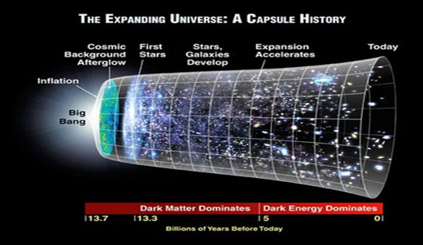
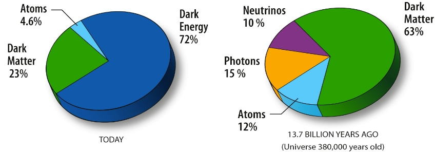
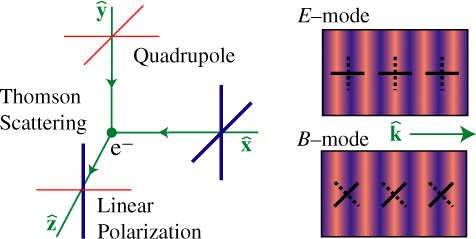

My Research
Cosmology in a Nutshell
In Chinese, 'the Universe' is called 'Yu Zhou (宇宙)'. As an ancient Chinese philosopher Shi Jiao (390 B.C-330 B.C) said: "The surrounding space is called 'Yu(宇)'; the time from past to future is called 'Zhou(宙)'.(上下四方曰宇，往古来今曰宙——《尸子》)" This is a perfect definition of "the Universe": all of space and time. Cosmology is the origin, evolution, and eventual fate of the universe.
At the beginning of the 20th century, Einstein proposed General Relativity, the theory of spacetime geometry. In 1917, Einstein published “Cosmological Considerations in the General Theory of Relativity.” It is the first paper to study the structure of our universe using. It started an era of physical cosmology. Fundamental theory on how the cosmos evolves were developed before 1940's and expains the famous discovery by Edwin Hubble: the universe is expanding. The theory is called the "Big Bang Theory". It describes how the universe expanded from a very high-density and high-temperature state.

(Expanding universe. Image from
here)
The Big Bang cosmology assumes that the universe is both homogeneous and isotropic. However, observations show that the universe doesn't look that uniform, it has 'large scale structures' like galaxy clusters and 'filaments' connecting them. Studies on cosmological inhomogeneities and anisotropies grow up in the latter half of 20th century. Observations on CMB anisotropies, spatial distribution of matters and so on confirm these theory. These studies answer the question like 'how does the large scale structure form and evolve?'
Another exciting (but puzzling) observation of the universe is that the ordinary atomic matter and energy constitute only 4.6% of the universe while the rests are unknown. The rests are invisible, so they are called 'dark matter' and 'dark energy'. What are they? Where are they? How do they interact? A big goal of modern cosmology is to answer these questions.

(Content of the universe. Image from
here)
The standard model of our universe is called the ΛCDM model. Roughly speaking, it is a parametrized Big Bang Theory with assumptions about dark matter and dark energy. There are 6 fundamental parameters in the ΛCDM model, they describe the expanding speed of the universe, the content of each ingredient and the property of large scale structure. This model has been tested by vast amound of observational data and the parameters are constrained by different kinds of observations.
An important supplement of the ΛCDM model is the 'cosmological inflation', which describes a dramatically acceleration phase of the early universe (when the universe was 10-36 seconds old). During inflation, the universe expands by 1026 in 10-32 seconds. The inflation was first proposed to solve some puzzles in ΛCDM model, but there are no direct evidence to prove its existence.
In addition to what is said above, there are tons of questions in cosmology, which makes it a lively descipline of modern physics and astronomy. The main method to study them is by observations. I am quite excited by the idea that we can take the universe as a laboratory and learn the fate of it as well as fundamental physics.
My Research
My research interest mainy focuses on CMB and large scale structure. CMB polarization is a highly potential observation for solving the mystery of inflation. Polarized CMB radiation is generated by the quadupole on the last scattering surface at z~1100. It is the imprint of primordial gravitational waves generated by quantum fluctuations during inflation. The patterm of CMB polarization can be decomposed into a curl-free E-mode and a divergence-free B-mode. The B-mode is recognized as a "smoking gun" signature of inflation.

(CMB polarization is generated by local quadrupole. Right panel shows the pattern of E- and B-mode. Image from: here)
My master research partly focused on the instrument analysis of a proposed space-based telescope called the Primordial Inflation Explorer (PIXIE). Currently I'm a member of the Cosmology Large Angular Scale Surveyor (CLASS) group. It is an on-going ground-based CMB polarization telescope located in Atacama, Chile. It maps 70% of the sky at 40, 90, 150 and 220GHz with a resolution about 1°. My current work is to analyse its sky maps and comparing them with former experiments.
Another part of my work is to probe the physics of galaxy clusters via thermal Sunyaev-Zeldovich(tSZ) and gravitational lensing. The tSZ effect is the inverse-Compton scattering of CMB photons which causes a shift in CMB frequency spectrum. It helps probe the baryonic physics in clusters. Gravitational lensing is the magnification and distortion of distant sources due to the bending of light by gravity in between. Since it is a pure gravitational effect, it reveals the existence and spatial distribution of dark energy. I'm currently doing a cross analysis between these two effects with data.
Left: tSZ effect; Right: spectral distortion of CMB by tSZ effect.